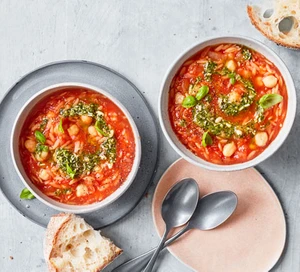

Tomato & pasta soup

Make our simple, budget-friendly tomato, pasta and chickpea soup in just 30 minutes. This easy, vegetarian family meal is healthy and even low fat
Ingredients
- 2 tbsp olive oil
- 1 onion, chopped
- 2 celery sticks, chopped
- 2 garlic cloves, crushed
- 1 tbsp tomato purée
- 400g can chopped tomatoes
- 400g can chickpeas
- 150g orzo or other small pasta shapes
- 700ml vegetable stock
- 2 tbsp basil pesto
- crusty bread, to serve
Steps
- Heat 1 tbsp olive oil in a large saucepan. Add the onion and celery and fry for 10-15 mins, or until starting to soften, then add the garlic and cook for 1 min more. Stir in all the other ingredients, except for the pesto and remaining oil, and bring to the boil.
- Reduce the heat and leave to simmer for 6-8 mins, or until the pasta is tender. Season to taste, then ladle into bowls.
- Stir the remaining oil with the pesto, then drizzle over the soup. Serve with chunks of crusty bread.